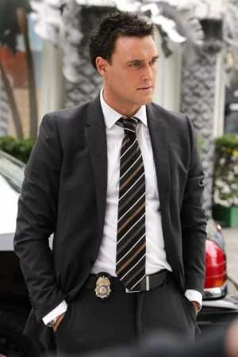
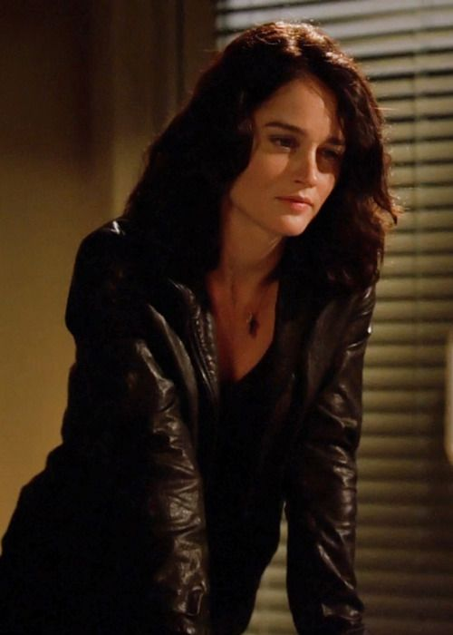
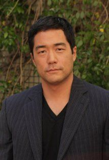

Patrick Jane tiene una personalidad
juguetona y arrogante y una tendencia
a ignorar la autoridad, a menudo
utilizando métodos poco ortodoxos,
que se encontraron con la desaprobación
de sus compañeros de trabajo. Jane se
considera que es el mejor detective en
California, a la par con Sherlock Holmes.

Wayne Rigsby es un antiguo protagonista que se convirtió en un personaje secundario en The Mentalist de CBS. Es el esposo de Grace Van Pelt y un ex agente de la CBI. Él y Grace dejaron el programa para vivir la vida civil y tienen una hija llamada Maddy, que lleva el nombre de la abuela de Grace.

Ella es interpretada por Robin Tunney y es un agente de alto nivel en el California Bureau of Investigation (CBI). Ella ha sido designada como el agente especial a cargo o "Jefe", que da a su completa responsabilidad y control sobre cualquier investigación que su equipo se le asigna.

Kimball Cho es un personaje ficticio de la serie El mentalista y como tal es miembro de la Brigada Criminal, formando parte del equipo de Teresa Lisbon. En general es una persona seria, siguiendo siempre las normas como su jefa, en oposición a los actos de Patrick Jane.